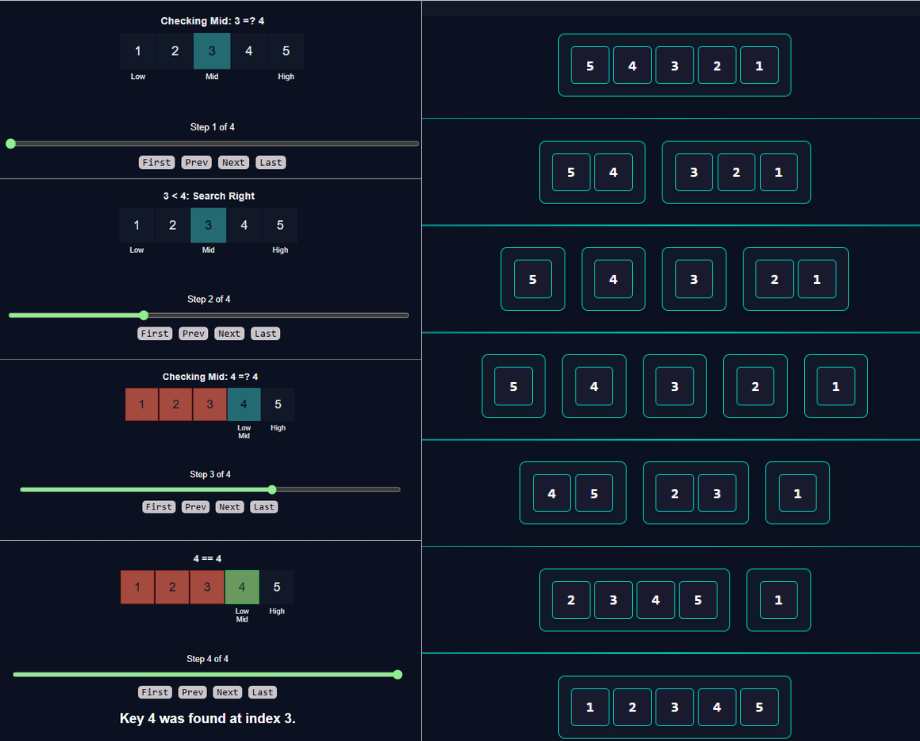
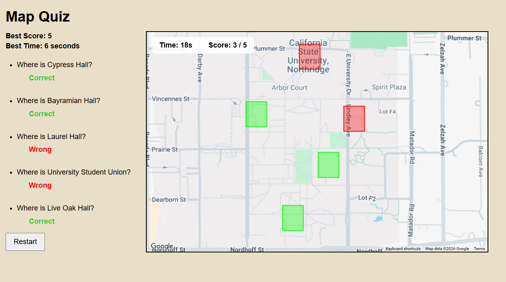

Projects
Experimentum
Unity, C#
Project Lead, Main Core Gameplay Developer
Game Development and Education
An interactive educational laboratory built in Unity, featuring guided virtual science experiments that teach users how experiments work and why they produce specific results. As Project Lead and Core Gameplay Developer, I led a five-person development team and implemented core gameplay systems, UI, interaction logic, and four of the project's 12 experiments.
For source code and demo, visit the GitHub repository.
Divide and Conquer Visualizer
JavaScript, HTML, CSS
Core Functionality Developer
Web Development and Education
An interactive algorithm visualization tool built by a four-person team to demonstrate Binary Search and Merge Sort. I implemented most of the application's functionality and HTML structure, including step-by-step visualizations and explanations of algorithm time complexity.

For source code and demo, visit the GitHub repository.
CSUN Campus Map Quiz
JavaScript, HTML, CSS
Web Development
An interactive campus geography game built with JavaScript and the Google Maps API. Players identify CSUN buildings by selecting their locations on the map and earn points based on their guesses. The original live demo is currently unavailable because its API configuration is no longer active. A screenshot of the application is provided to demonstrate the project.

For source code, visit the GitHub repository.
Demo is currently unavailable at the moment as the API is no longer valid.
Education
California State University Northridge, 2022 - 2026
Bachelor's Degree in Computer Science
Relevant coursework includes Algorithms, Advanced Data Structures, Operating Systems, Computer Architecture, Database Design, Software Engineering, Machine Learning, Web Development, Human–Computer Interaction, Senior Design I & II.
Work Experience
Open House Volunteer
Educational Opportunity Program (EOP), CSUN
October 2022 – November 2022
As an Open House Volunteer for CSUN’s Educational Opportunity Program (EOP), I assisted with event preparation and student outreach during the university’s open house. I collaborated with a team to create and distribute promotional materials while sharing my personal experience with prospective students and families interested in the program.
Major Duties:
- Collaborated with team members to design and assemble promotional buttons
- Staffed the EOP information booth during the open house event
- Engaged with prospective students and families to explain the EOP program
- Shared personal experiences to provide insight into student involvement in EOP
- Assisted with event setup and general booth coordination
Event Volunteer
Educare
August 2021 - June 2022
As a Event Volunteer for the Educare Foundation, I assisted with the planning and execution of local community events. I aided staff with event logistics, and promoted the mission of the Foundation throughout the community and school.
Major Duties:
- Setting up promotional materials, displays, and signs for the events
- Transporting supplies and materials to and from event sites
- Supporting staff with on-site coordination and logistical needs
- Communicating with the public about the mission of the Educare Foundation
- Providing general support to the events to help ensure that all went well